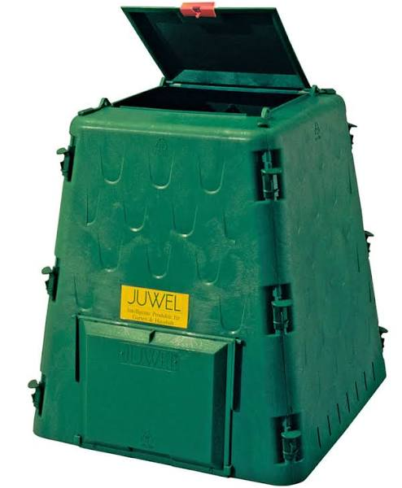
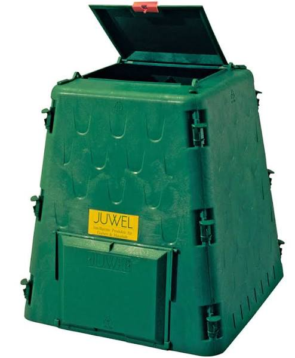

Recycling Effort at La Posada Concepción
Mulegé, Baja California Sur, México
{This is what we do, you can do it, too!}

|
|
Recycling Effort at La Posada Concepción
|
 |
The purpose of this website is to educate people as to what efforts can be made to control trash and unwanted items in the Mulegé and surrounding area.
(Please pick a link at the top for more details on what we DO and DO NOT accept and HOW we need it collected.)
As consumers, we find difficulty in disposal of our food and drink containers, garbage, packaging and broken items. Currently, we have a few options for what we can do. Among these areOur most visible goal in our "reduce, re-use, recyle" efforts is to make the "dump" less of an eyesore and not burn plastics. We hope to accomplish this and more by using available resources and imagination.
The use of the Green Cone or other composters and our pig pen (not active at the moment) does a lot to keep garbage out of the trash bins and out of the dump. The burning of garbage is not at all eco-friendly. Garbage, as you well know, attracts animals (vultures, coyotes, stray dogs, etc.) and bugs (ants, cockroaches, etc.). Besides, it plain stinks.
We are currently on our third recycling manager, Cesar Diaz, at the scrap metal yard now located on the south side of Loreto. Cesar also takes a keen interest in recycling with the emphasis on not burning anything. Years ago we were provided a trailer and a cage.
Since then we've added barrels and replaced the trailer. We need all the bins and barrels we have for all the recyclables we can now collect.
If you wish to recycle by taking your items to Loreto, please contact Cesar (he speaks English) by phone (646-179-7628 or 646-212-1795) or email (miraauto2014@gmail.com) to confirm his hours of operation (at the moment, 9am-2pm, Thursday, Friday and Saturday) and that someone will be there. His business, EnviroClean, is about a mile south from the airport on the right hand side of the highway, when heading south. Please offer a donation for handling your recyclables and pay for crates of glass (50 pesos a crate).
As to the dump, many items go there to get burned, but often they are just scattered by forces of nature, i.e., wind and rain. Much of this trash is burned with some successful reduction in volume, but a fair amount of it can't or shouldn't be burned. Burning of toilet paper and other paper products is the normal procedure here. It is to be determined if we can do more with construction waste, furnishings and other non-Baja recyclables.
12 volt batteries and the like are accepted (for recycling the lead). Household batteries (AA, AAA, etc.) and cordless tool batteries are not accepted at this time. Please take them back North for recycling.
Styrofoam, plastic film, bubble wrap, packing peanuts are just some of the items many residents bring with them from other areas with the result of dumping these items here. It should be considered by residents that these items could be returned or recycled in the areas where they were purchased.
Other alternatives to tossing surplus or less useful items is to hold a garage sale, set up a free table, arrange a group swap event or donate your items to a "segunda" (second hand store).
NOTE:
Because it costs us money to take the materials to Loreto and it costs Cesar to ship glass, we do ask for donations. In Posada, see Louie or Tip. In Coyote, see Cindi.
Thank YOU for your support!